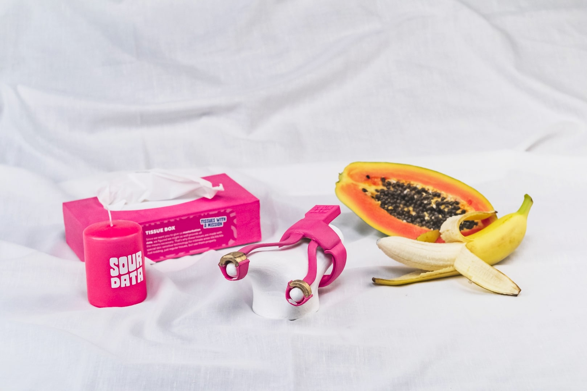
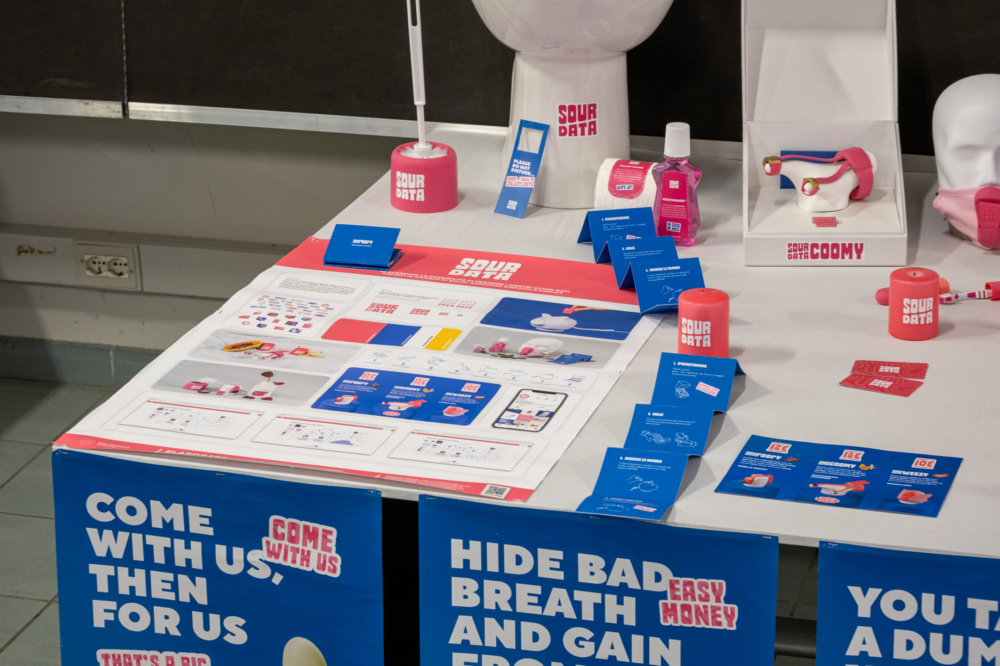
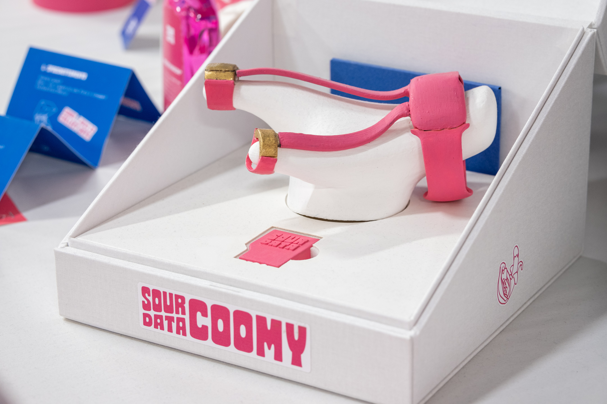
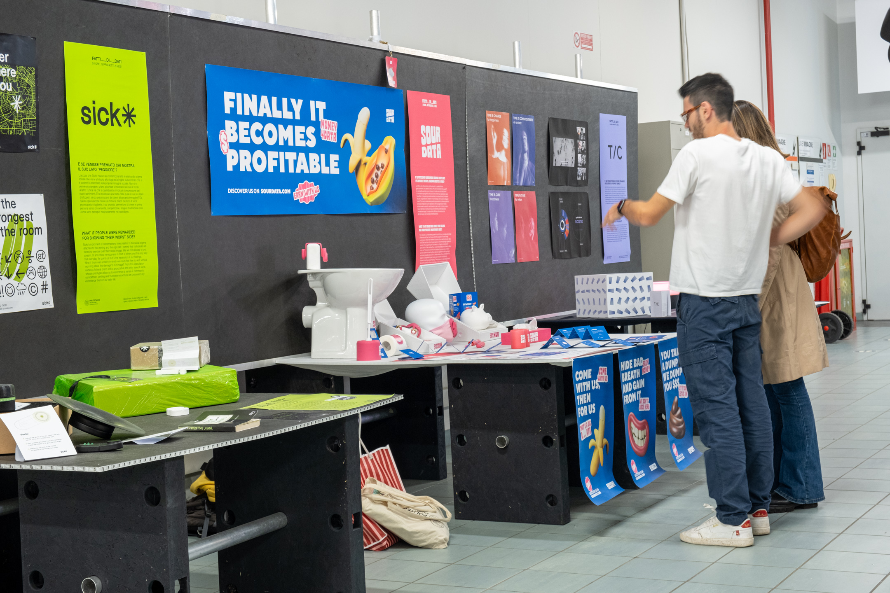
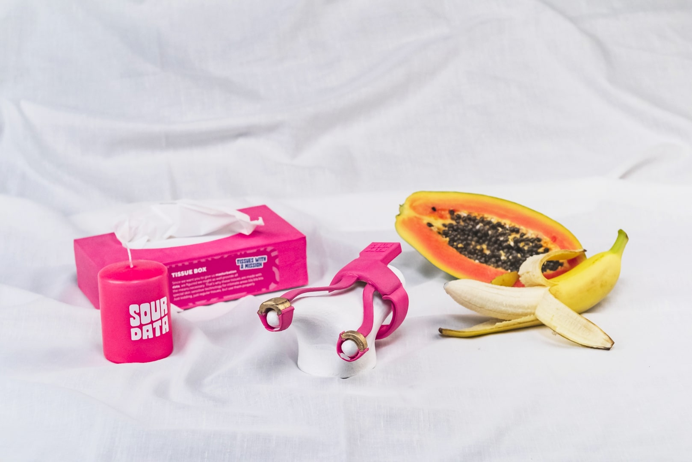
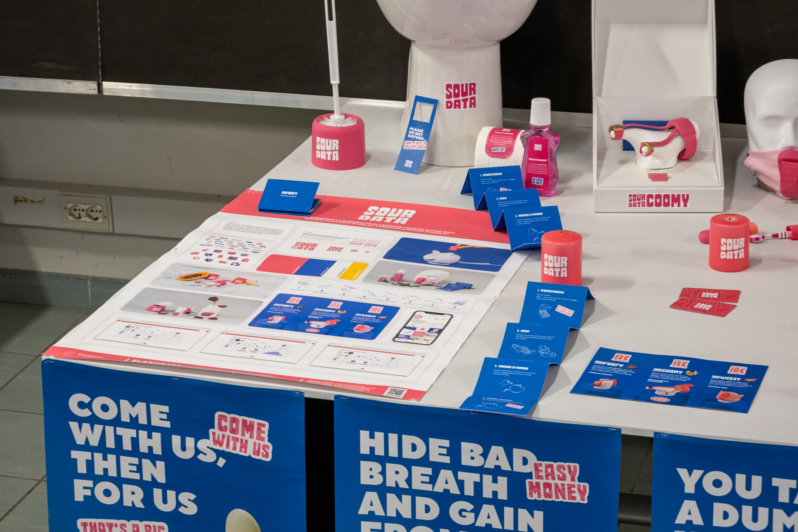
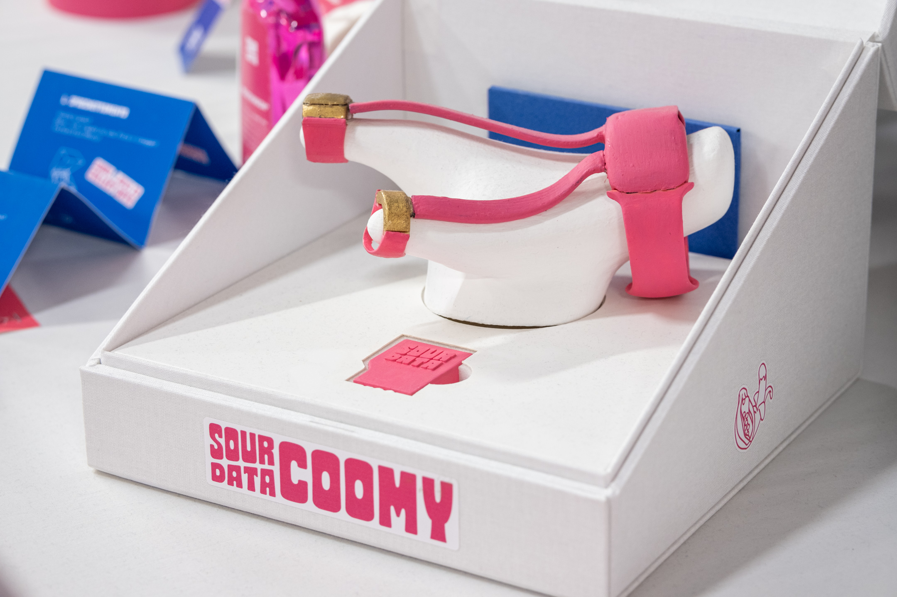
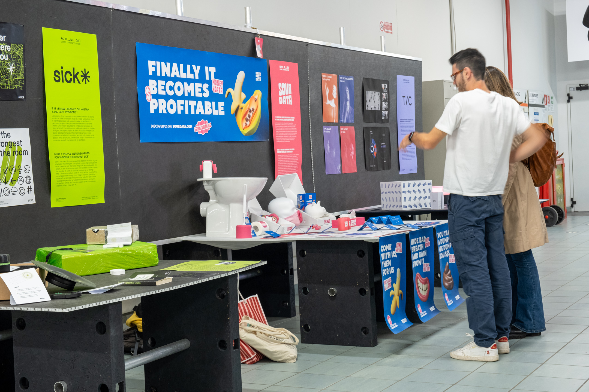

SourData
This fictional brand lays its foundations in a highly topical speculation: if we had the tools to sell our most private data for money, would we be willing to do so? SourData answers this question by proposing a product/service system consisting of three devices capable of collecting data in extremely intimate areas such as masturbation, faeces and breath. All crowned by an ironic and irreverent brand identity characterised by pop imagery. The aim is to reflect on the disposal of personal data in the contemporary world.
This project was shown during the Design Week in the DesignXDesigner exhibition
2022 Bachelor thesis project
2022 Bachelor thesis project
 
